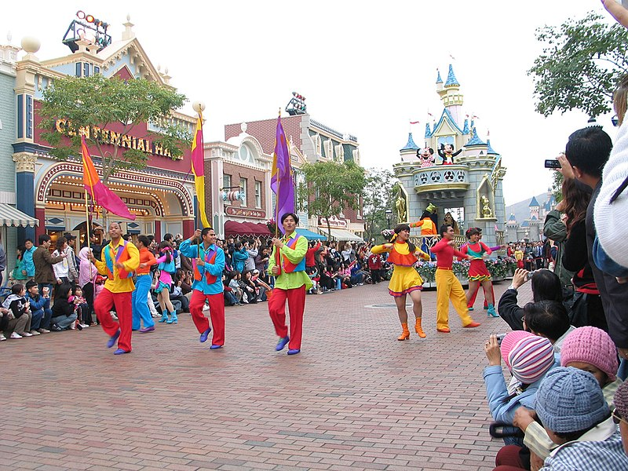
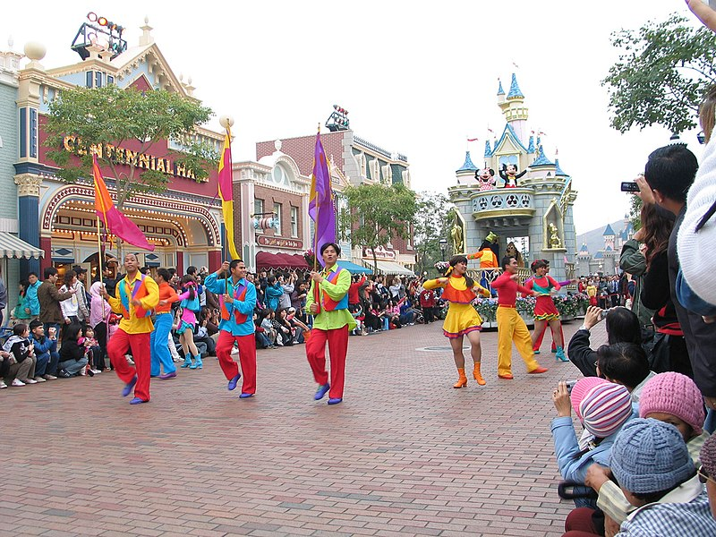

A Magical Day at Disneyland and Shopping in Tsim Sha Tsui
 

My day in Hong Kong started with a trip to the magical Hong Kong Disneyland. From the moment I entered the park, I was immersed in a world of fantasy and excitement. The vibrant parades, thrilling rides, and meeting iconic Disney characters made it a dream come true. I spent hours exploring every corner of the park, from the Sleeping Beauty Castle to the Tomorrowland rides. The atmosphere was magical, and I didn’t want to leave.

Afterward, I headed to the Tsim Sha Tsui area for some shopping and exploration. The bustling streets were lined with luxury brands, department stores, and boutique shops. I found myself wandering around Harbour City Mall, browsing high-end shops, and enjoying the views of Victoria Harbour. The area is vibrant, full of energy, and perfect for shopping enthusiasts like myself. It was the perfect way to end an unforgettable day in Hong Kong!